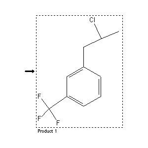

|  |
| FA | RX(1); FLST(1); RX(1) |
Reaction (1 of 1)
| Reaction ID | 7190513 |
| Product BRN | 1958219 |
| Product | 1-(2-chloro-propyl)-3-trifluoromethyl-benzene |
| No. of Reaction Details | 1 |
Reaction Details (1 of 1)
| Reaction Classification | Preparation (half reaction) |
| Citation Pointer | 3679601; Patent; Pacific Research Laborat.; US 3792048; 1974; Chem.Abstr.; EN; 80; 108202;2893490; Patent; Hoffmann-La Roche; DE 2245467; 1972; Chem.Abstr.; EN; 81; 25406; |
Reference (1 of 2)
| Citation Number | 2893490 |
| Document Type | Patent |
| Patent Author | Hoffmann-La Roche |
| Patent Number | DE 2245467 |
| Patent Year | 1972 |
| Journal/Review Without CODEN | Chem.Abstr. |
| Language Code | EN |
| (Series) Volume | 81 |
| Number | 25406 |
Reference (2 of 2)
| Citation Number | 3679601 |
| Document Type | Patent |
| Patent Author | Pacific Research Laborat. |
| Patent Number | US 3792048 |
| Patent Year | 1974 |
| Journal/Review Without CODEN | Chem.Abstr. |
| Language Code | EN |
| (Series) Volume | 80 |
| Number | 108202 |